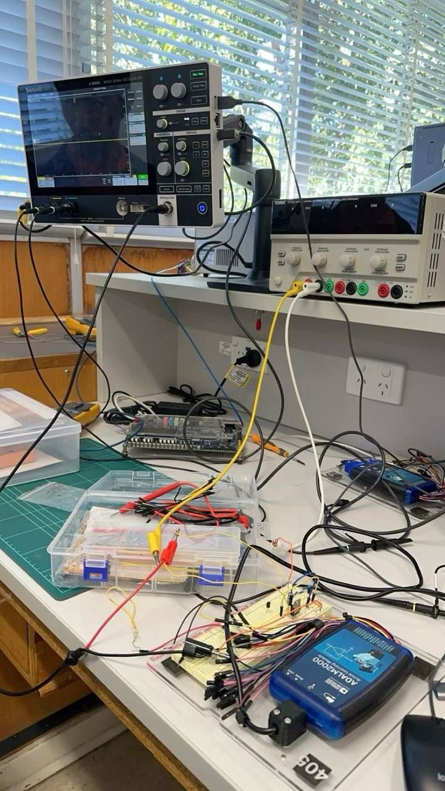
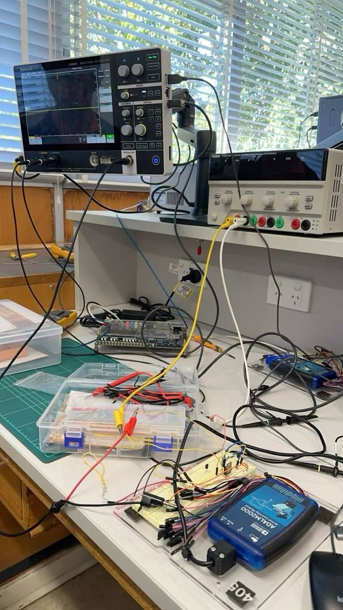

Our Mission
At USCO, we believe in using technology to transform lives. Our bionic prosthetic arms are designed to provide Nigerians with a more accessible, affordable, and efficient solution to limb loss. Whether it's for daily activities, work, or enhanced mobility, our goal is to bridge the gap between technology and accessibility.
Who We Are
This initiative was founded in 2024 by leading scientists at USCO. We are a team of engineers, researchers, and medical experts committed to pushing the boundaries of bionic technology. By leveraging cutting-edge robotics, artificial intelligence, and user-friendly designs, we aim to create prosthetics that feel natural and responsive.
Our Technology
Our prosthetic arms incorporate advanced sensors and AI-driven mechanisms that allow users to perform precise movements. With lightweight materials and a sleek design, our bionic arm ensures comfort and durability. Additionally, we are continuously innovating to make these prosthetics more intuitive and adaptable to different users.
Gallery
 
